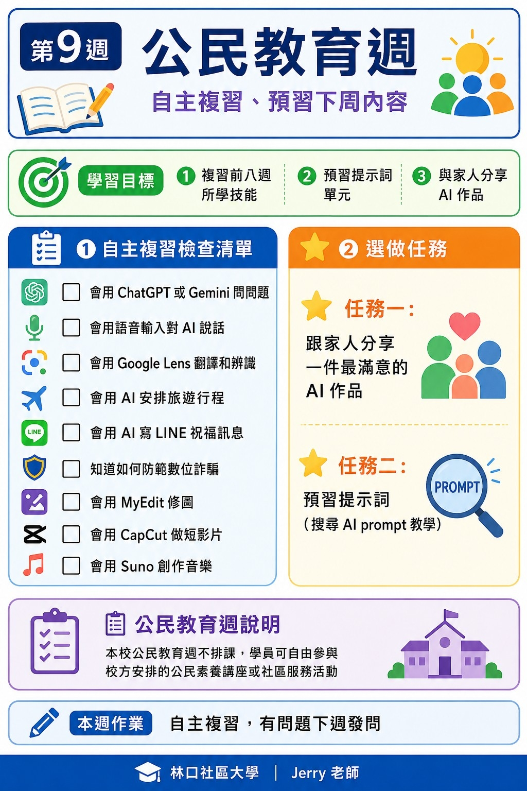
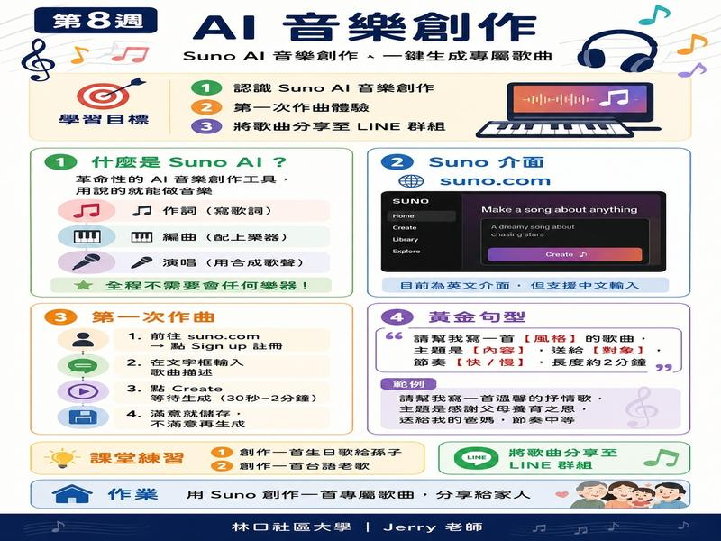
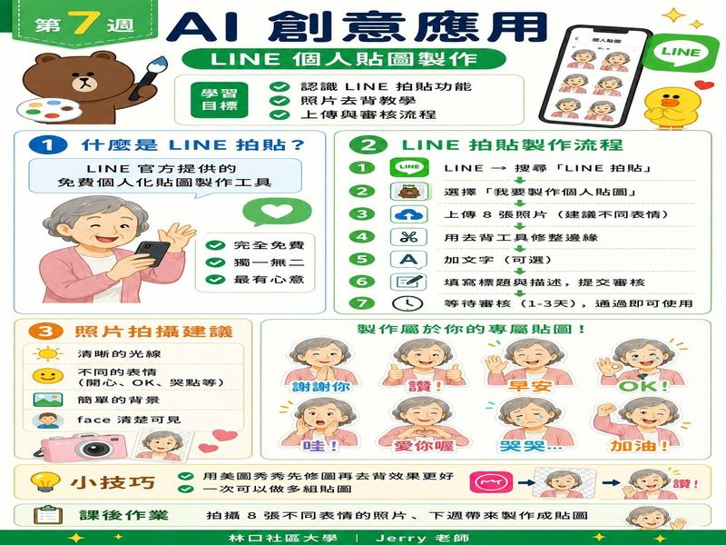
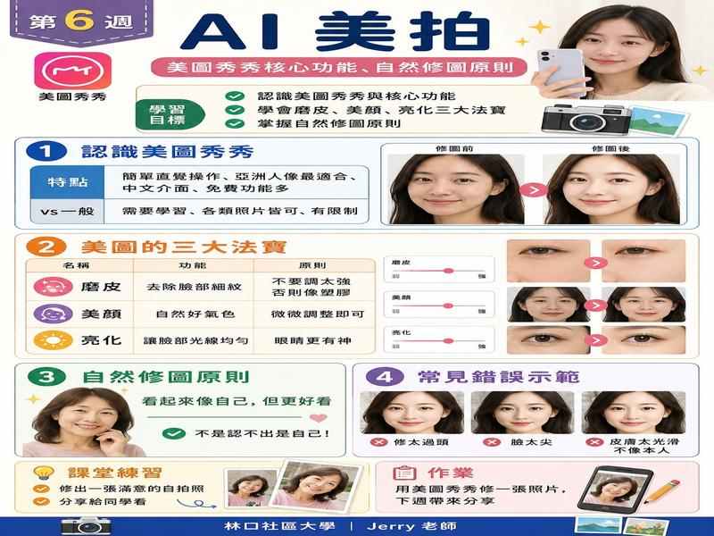

👋 這門課適合誰？
✅ 會用手機就會學
✅ 想要讓生活更方便
✅ 對 AI 有興趣但不知道從哪裡開始
📝 不需要任何科技背景，我們會用最簡單的方式，一步一步帶你操作！
🤖 認識 AI 助手：ChatGPT 是什麼？
了解 AI 是什麼、能做什麼，並實際打開手機，認識 ChatGPT 的基本操作與日常應用場景。

📱 這是 ChatGPT 手機版畫面
💬 LINE 結合 AI 聊天機器人
用 LINE 結合 AI 查天氣、翻譯文句、記錄生活大小事，讓 LINE 成為更聰明的生活助手。

💬 用 LINE 就能問 AI 問題
🗣️ 語音助理：動口不下手
學習使用 Siri 與 Google 助理，用說話的方式設定鬧鐘、查詢路線、搜尋資訊，雙手完全自由。

🗣️ 對著手機說話就能做事
🔍 Google Lens 視覺搜尋
拍照即翻譯、拍照即辨識商品與植物。用手機鏡頭打開百科全書，解決生活中的疑難雜症。

📸 拍照就知道這是什麼
📸 AI 修圖
學會用自然語言搜尋創意圖片，並實際操作 AI 圖片生成工具，創作個人專屬的視覺素材。

🎨 用說明文字就能產出圖片
🎵 AI 音樂創作 Suno
認識 Suno 音樂生成平台，學習選擇曲風與主題，創作第一首個人專屬歌曲。（兩週）

🎵 說出你的想法，AI幫你作詞作曲
🌟 Gemini 應用實作
認識 Google AI 助手 Gemini，學習用它整理文件、規劃旅遊行程、輔助日常學習。（兩週）

🌟 Google 的 AI 小幫手
📸 影像工具應用
學習美圖秀秀的基礎修圖功能，以及 AI 輔助的圖片編輯與優化技巧，讓照片更出色。（兩週）

📸 一鍵美化你的照片
🛡️ 安全上網與個資保護
學會識別假訊息與常見網路詐騙手法，建立安全的密碼習慣，安心享受數位科技帶來的便利。

🛡️ 保護自己，安心上網
🎉 成果展示與總複習
分享這學期所有 AI 作品，課程重點回顧，並推薦延伸學習資源，讓 AI 應用持續走入日常生活。

🎉 展示自己的作品
👨🏫 授課教師
致力於將複雜的 AI 工具轉化為簡單易懂的日常生活應用，幫助樂齡族建立數位自信。 擁有豐富的教學經驗，授課風格親切耐心，強調「做中學」的實作導向。
📋 報名資訊
📅 開課日期：115年9月4日（每週五）
⏰ 上課時間：19:00 - 22:00（每週3小時）
📍 上課地點：林口社區大學
📚 報名期限：即日起至開課前一週
💰 報名方式：親洽林口社區大學或電話報名